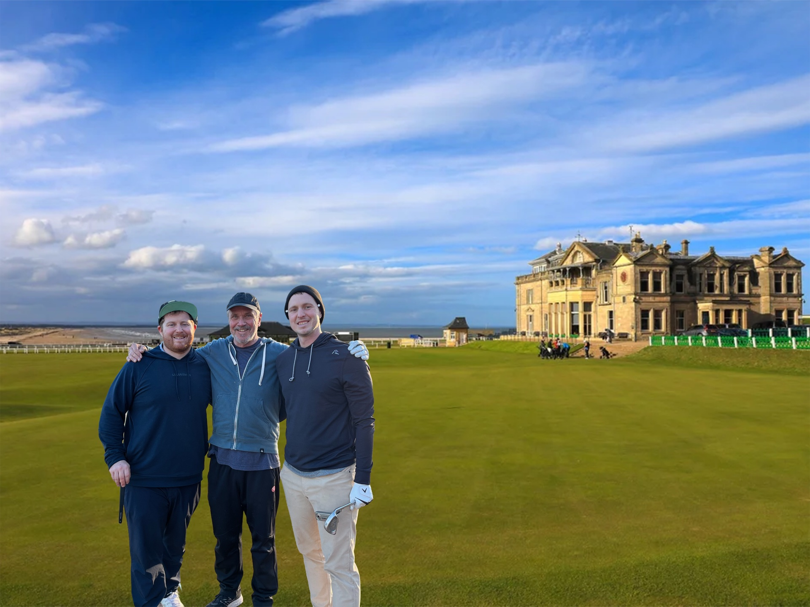

Travel & Edinburgh
Depart Charlotte Jun 29 4:45 PM
Land Edinburgh Jun 30 7:40 AM
Edinburgh day & Alan dinner

This isn't just a golf trip. It's our story.
A week of historic links golf, Highland whisky, ancient castles, and father-son memories that will last forever.
Dunbar • Gullane #1
Gullane #2 + #3 • Dumbarnie
Nairn • Old Course (ballot)
Two ballot attempts
~44% odds!
Dumbarnie Links Sunday
Family owned since 1836
Cask room tour
Nairn Highlands base
Sat Jul 4 in St Andrews
Toast to Scotland
Dunvegan dinner
Depart Charlotte Jun 29 4:45 PM
Land Edinburgh Jun 30 7:40 AM
Edinburgh day & Alan dinner
Dunbar Golf Club Wed Jul 1
Gullane #1 Championship Thu Jul 2
Old Course Fri Jul 3 (if ballot won)
OR Gullane #2 + #3 marathon
St Andrews Sat Jul 4 (Independence Day!)
Dumbarnie Links Sun Jul 5 ✅
~44% Old Course odds across 2 ballots
Nairn Golf Club (Walker Cup venue)
Glenfarclas Distillery PM
Last night in Scotland
Depart Nairn 6:30 AM • Edinburgh 11:25 AM → Charlotte 5:53 PM (BOOKED!)
"This isn't just a golf trip. It's our story. Something we'll talk about for the rest of our lives."